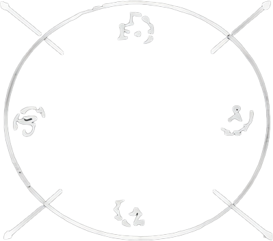
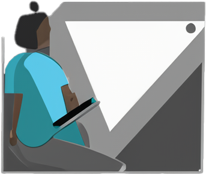
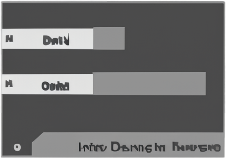
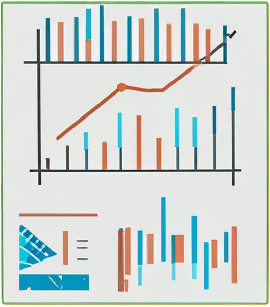
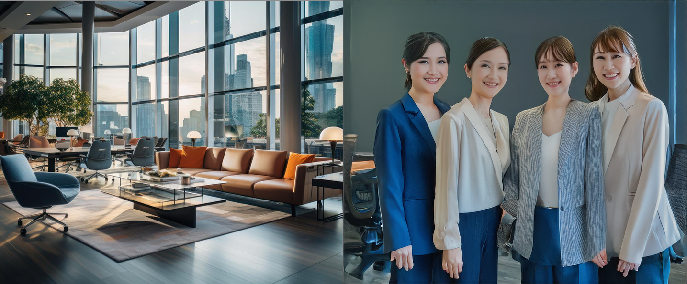

お問い合わせはこちらから
ArtiLogi
アーティロジー
人口
+
物流
Arti
Logy
ArtiLogyは物流業界向けのAIシステムを開発・提供を
しているスタートアップ企業です。
・配送ルート最適化AI

1
・配達遅延予測、アラート機能

2
・日報、稼働レポート自動作成

3
顧客満足度
No1

More →

Mission
「物流に知性を。」
ArtiLogyは、AIの力で物流の非効率を解消し、
ドライバーや配車担当者が本来の価値を発揮で
きる社会を目指します。
Vision
"持続可能な物流"のスタンダードを作る
人口減少や高齢化が進む中でも、物流が止まらな
い仕組みを社会にする。これが私たちの目指す未来です。
Value
現場ファースト : 現場の声に耳を傾けることから始め、現場ファーストを意識します。
未来志向 : 5年後10年後に意味のあるプロダクトを作り上げることを目標しています。
共創 : 顧客・チームとともに価値をつくることを私たちの
ー代表取締役 CEO 寺木海翔
私たちは、IT化が進んでいない物流現場の課題を、技術と人の力で解決しようとしています。
父が千穂の運送業を営んでいた経験から、”効率化ではなく、人を守るためのデジタル”を信念
に2024年にこの会社を立ち上げました。
私たちはまだ小さなチームですが、だからこそ現場に
密着し、本当に役立つサービスを作れると信じています。
「物流に姿勢を。」
お問い合わせはこちらから
© 2025 ArtiLogy Inc.All rights reserved